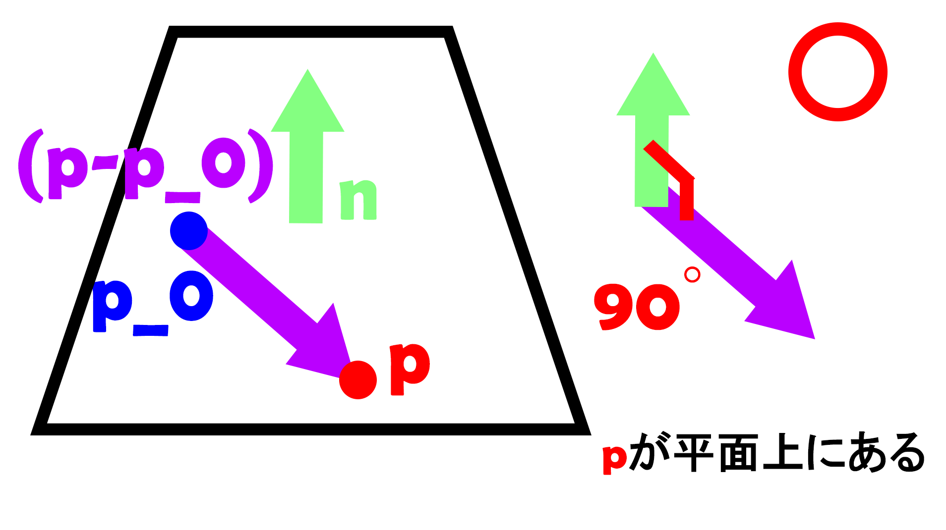
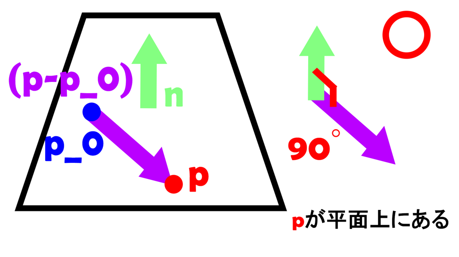
時間内にたくさんコインを集めよう！ 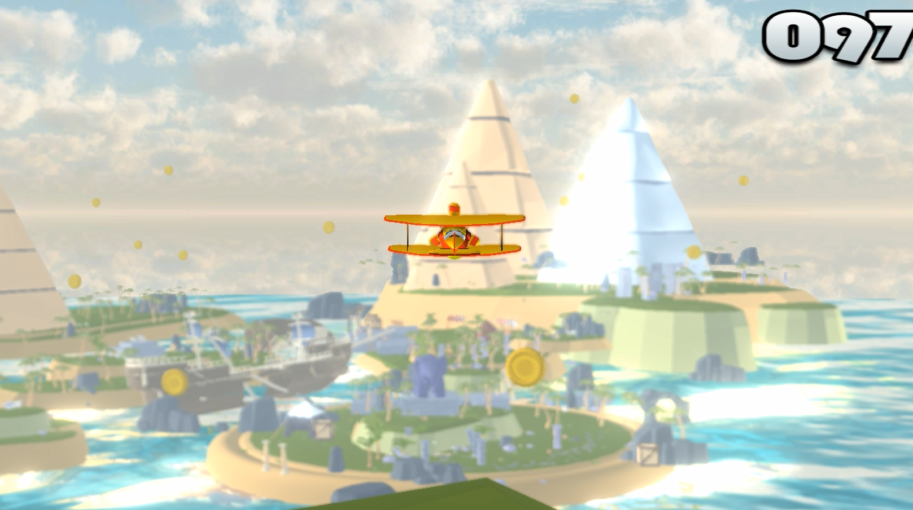
今回の作品では、飛行機という題材を 単なる数値操作として扱うのではなく、 どのような力の関係によって挙動が生まれているのかを 自分の中でしっかり理解したいと考えました。
そのため、揚力・抗力・モーメントを用いた 物理モデルを採用しています。
単に見た目をそれらしくするのではなく、 「どの力が、どのように影響して今の挙動が生まれているのか」 を自分の中で説明できる状態を目指して実装を行いました。
本作では、機体全体に一つの力を与えるのではなく、右主翼・左主翼・水平尾翼・垂直尾翼といった各翼が、
それぞれ独立して力を発生させています。
翼ごとに果たす役割（回転）は異なりますが、
本作では力の計算に用いる基本的な処理は共通としており、
各翼は同一のクラスのインスタンスとして実装しています。
この構成により、翼を追加する場合も、
翼のインスタンスを一つ追加するだけで対応できます。
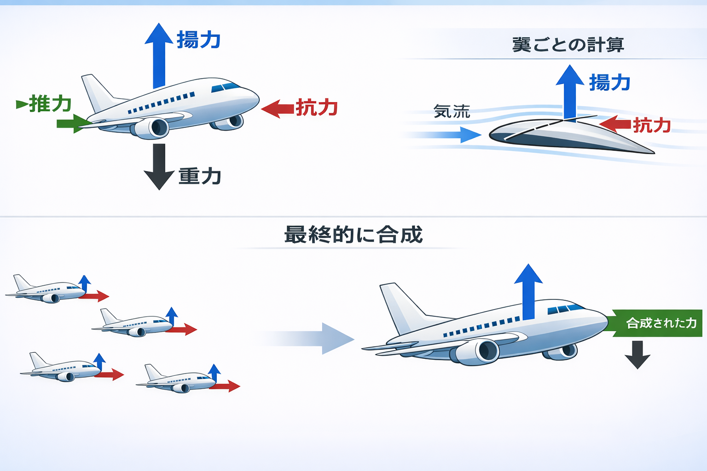
実際に機体に作用する各力をどのように計算しているかについて説明します。
基本的に力はすべて三次元のベクトルとして扱っています。
考慮している力は、
重力、推力（プロペラによる前進力）、
揚力（翼を上方向に押し上げる力）、
抗力（進行方向と逆向きに作用する力）の四つです。
揚力と抗力はそれぞれの翼で計算し、四つの翼の力を合成しています。
そこに推力と重力を加えることで、
機体全体に作用する合力を求めています。
ひとつ前で計算した力をもとに、機体の位置を更新します。
流れとしては、力 → 加速度 → 速度 → 位置の流れです。
まず、力から加速度に変換します。具体的には、力を質量で割っています。
（力は加速度と比例関係で今の実装では質量はほとんど意味を持っていないですが、機体重量の違いなどをパラメーターとして考慮したい時が来るかもしれないので念のため割り算しています）
そのフレームの速度を求めるために、そのフレームの加速度（つまり加速度×1フレームの時間）を毎フレーム蓄積させます。つまり積分です。
さらに速度を積分し、次のポジションを求めています。
これを毎フレーム繰り返します。
続いて、機体の回転の計算について説明します。 本作では、各翼で計算したモーメントを合成し、 機体全体に作用するモーメントを求めています。
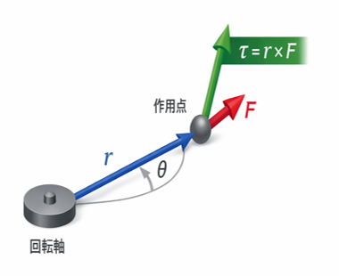
回転の計算を行う前に、 本作で用いているモーメントについて簡単に説明します。
モーメントは三次元のベクトルで、 ベクトルの大きさは回転の強さを、 向きは回転軸の向きを表します。
本作では、 機体の重心から力の作用点へのベクトルと、 その力との外積を用いてモーメントを計算しています。
移動の計算と同様に、 まずモーメントから角加速度を計算し、 角加速度を積分することで角速度を求めます。 さらに、この角速度を積分することで、 機体の姿勢を毎フレーム更新しています。
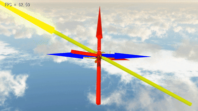 本作では、 力やモーメントといった物理量を扱っているため、 数値だけを追っていても挙動の原因を把握しにくい場面が多くありました。 しかも、本作では、 右主翼・左主翼・水平尾翼・垂直尾翼の 四つの翼それぞれで力とモーメントを計算しています。 さらに、モーメントは力の作用位置にも影響を受けるため、 挙動がおかしくなった場合でも、
どの翼が原因なのか
どの力やモーメントが問題なのか
を、
機体の姿勢や数値ログだけから直感的に判断することは困難でした。
そこで、
本作では物理挙動のデバッグ方法として、
各翼で計算された力やモーメントを、3D空間上に矢印として可視化
する仕組みを実装しました。
このデバッグ表示により、
挙動に違和感がある場合でも、
「どの翼の」「どの力・モーメントが」
原因になっているのかを即座に切り分けることができ、
物理挙動の調整や修正を効率的に行えるようになりました。
このように、物理挙動を可視化しながら確認できる環境を用意することで、 実装だけでなく調整や仕様変更にも対応しやすい構成になっています。
当初は、物理的な正確さによって
見た目のリアリティも大きく向上すると想定していました。
しかし実装を進める中で、
物理的な正確さと視覚的な変化は必ずしも比例せず、
見た目の変化に対して調整やデバッグの負担が大きくなる場面も多いことが分かりました。
本作ではその経験を通じて、
「どこを物理として扱い、どこを割り切るか」
という設計判断の重要性を学びました。
海の反射は、以下の流れで実装しています。
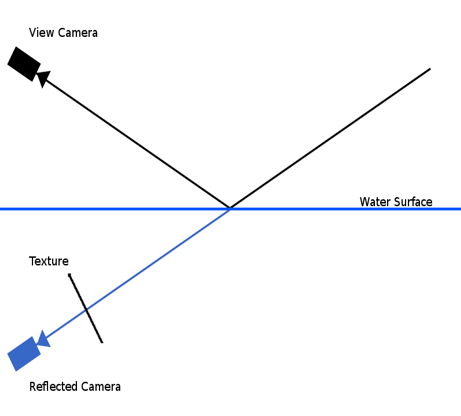 この構成により、 視点や機体の移動に応じて自然に変化する水面反射を実現しています。 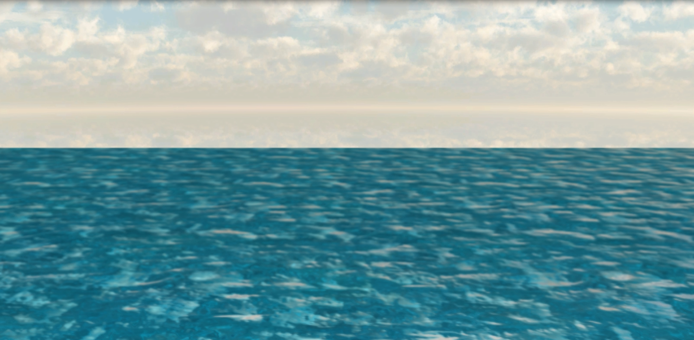
反射用カメラを単純に鏡映した場合、
という描画になってしまいます。
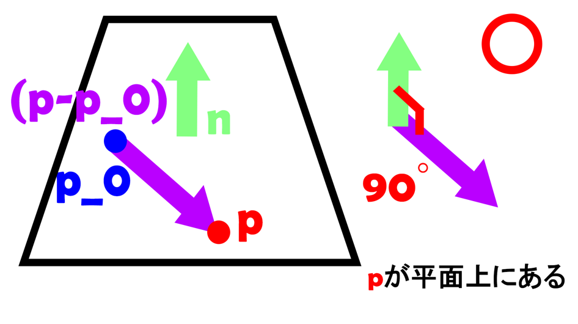
そこで、近クリップ面は使わず、シェーダー側で海面より下にあるかどうかを判定して描画を止める方法をとりました。


この平面より下にあるかどうかを判定する方法を考えます。
平面より 上側か下側か を判定するために、
平面が持つ 法線ベクトル を利用します。
もし判定している点が海面上にある場合、
判定したい点と平面上の任意の点を結ぶベクトルは、
平面の法線ベクトルと 90 度 の角度になります。
この性質を利用し、
判定したい点と平面上の点を結ぶベクトルと、
平面の法線ベクトルとの 内積 を計算します。
この内積が 負 になる場合、
点は法線とは逆方向、つまり 平面より下側 にあると判定できます。
本作では、
内積が負になる（海面より下にある）ピクセルは描画しない
という処理を行うことで、
反射描画時に海面下のオブジェクトが映り込まないようにしています。
今回のゲームでは、1000個以上のオブジェクトを描画しています。 さらに海の表現では、反射用にシーンをもう一度描画しているため、そのままだと処理が重くなります。
ただし、使用しているモデルはローポリゴンなので、GPUの描画負荷自体はそこまで高くありませんでした。 そこで原因を調べたところ、ボトルネックはGPUではなく、CPU側で大量のドローコール（Draw呼び出し）をしていることだと分かりました。
この問題に対しては、対策としてインスタンス描画を導入しました。 同じモデルを1個ずつ描画するのではなく、複数個分の情報（行列など）をまとめて送って、1回のDrawでまとめて描画する方式です。 これにより、CPU側の呼び出し回数を抑え、描画処理を軽量化しています。
導入後は、CPU負荷が目に見えて下がり、フレームレートが安定しました。
画面全体の見栄えを整えるため、 ポストエフェクトとして FOG（霧表現）と DOF（被写界深度）を実装しました。
FOG は遠距離のオブジェクトを自然にフェードアウトさせ、 空間の奥行きを出しつつ、画面が煩雑にならないようにしています。
DOF はカメラから遠いオブジェクトをぼかすことで、 画面全体をすっきり見せることを目的としています。
いずれも見た目の印象を優先しつつ、 操作性や視認性を損なわないよう、 効果は控えめに調整しています。
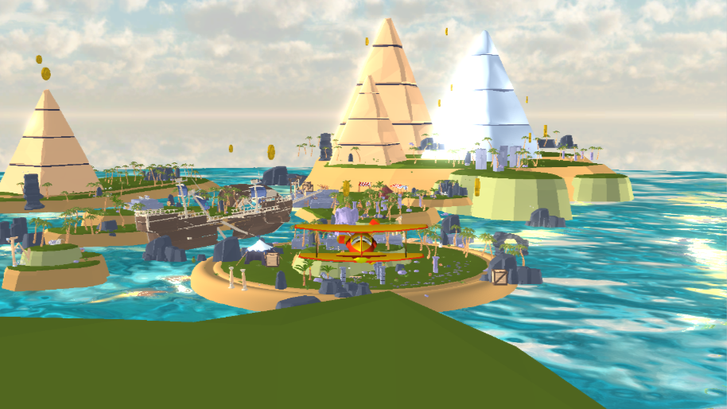

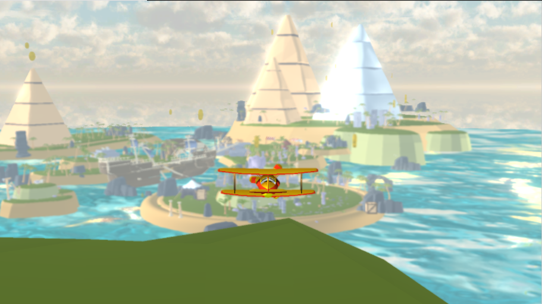
最初はコインを完全ランダムで出現させていました。 しかし、完全ランダムな配置ではプレイヤーの現在位置に関係なく 遠距離にコインが集中してしまう場合があり、 回収しにくさやプレイテンポの悪さにつながっていました。
そこで、プレイヤーとの距離と向きを考慮し、 近い位置ほど選ばれやすくなるよう出現確率に重みを付けた 重み付き抽選を採用しました。
これによりランダム性は保ちつつも、 自然に回収しやすい位置にコインが配置されやすくなり、 回収テンポの安定化とプレイ感の改善につながりました。
飛行機に対してカメラをそのまま追従させると、動きが軽く見えてしまうという課題がありました。 そこで、カメラの追従をばねの物理モデルとして実装しました。 その結果、視覚的にも機体の重量感やスピード感を表現できています。


一つ目は、SSR（Screen Space Reflection）の導入です。 SSRは、画面上に描画された情報を利用して反射を計算する手法で、 追加のジオメトリ描画を必要とせず、比較的低コストで反射表現を実現できる点が特徴です。
描画結果に依存するため、画面外の情報が反映されないなどの制約はありますが、 平面に限定されない反射表現が可能であり、 水面や機体表面など、さまざまなオブジェクトへの応用が期待できます。
今後は、既存の平面反射表現と用途に応じて使い分けながら、 SSRの導入にも挑戦し、表現の幅をさらに広げていきたいと考えています。
二つ目は、飛行機とオブジェクトの衝突時の挙動改善です。 現在の実装では、衝突が発生した際に機体の速度や回転が大きく変化し、状況によっては挙動が不安定になり、物理的に破綻した動きが発生する場合があります。
現時点では、この不安定な挙動が発生する根本的な原因は特定できていませんが、衝突時に加えられる力や回転量の扱い、数値的な安定性などに課題があると考えています。
今後は、衝突時の情報を可視化・整理しながら原因の切り分けを行い、反発量や角速度の制限、減衰処理などを段階的に導入することで、 物理的に破綻しない安定した衝突レスポンスの実装を目指したいと考えています。
三つ目は、ゲーム性の拡張です。 本作品は、コインを集めるという分かりやすい目的を持つ一方、ゲームの構造が比較的シンプルで、プレイ展開が単調になりやすいと感じています。
ただし現状では、飛行機の挙動に関してゲームの成立そのものに影響する問題が確認されており、 まずはその解消を最優先すべきだと判断しました。
今後は、基礎的な挙動の安定化を進めた上で、ゲームとしての完成度をさらに高めていきたいと考えています。